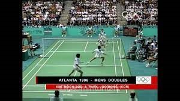
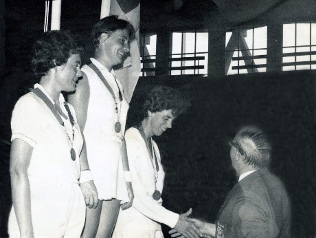

Before getting to the History let me tell you about the sport badminton.
It is a game that is played in a rectangular court divided by a net and is played by using the racket and a shuttle cock between two opposing players (singles) or two opposing pairs (doubles). A shuttlecock must cross the net and land in the half of the court occupied by their opponent in order for a player to earn a point.
Badminton is one of the most participated sports in the world, An article by www.morethansport.com stated "It's difficult to give an exact ranking of the most popular sports around the world. However, most ranking systems place badminton as the second most popular sport worldwide. It is estimated that about 220 million people play badminton around the globe every year."
This is due to the fact that it is one of the simplest sports for beginners to learn, that it can be played by people of all ages, that it involves only a few simple movements, and that it is inexpensive, adaptable, and playable anywhere.
5 BC in China, the ancestor name of badminton was Jian Zi, and some said it was Ti Jian Zi or Jianqiu. The goal of this particular variation of the game is to prevent the shuttle from striking the ground by using one's feet and other body parts without using one's hands. This is the precursor to badminton or its earliest forms.
Since the Han Dynasty (206 BC-220 AD), Jianzi has been played, and it gained popularity throughout the Six Dynasties, Sui, and Tang dynasties.Then in 16th-century Japan, they called it "Hanetsuki." They were using a wooden paddle called a hagoita and a shuttle called a hane.
In the same century Europe and England, similar to Hanetsuki with a small variation—were using paddles that were very similar to present badminton rackets, but it was called Battledore (bat or paddle) and Shuttlecock (also called “bird” or “birdie”). The paddle was made by stretching gut (often catgut) across a wooden frame. The Shuttlecock was made by covering the thin cork with trimmed and sculpted feathers.
Over time, Battledore and shuttlecock got popular and spread to other parts of Eurasia, such as Greece, Egypt, China, India, and Japan, where they have been played for generations.
Pune, India in the year 1860, British military officers used to play this game of Battledore and Shuttlecock but they named it as "Poona" or "Ponnai," which is the name of the game, which originated in the Indian town of "Poona" (now called "Pune") at the Ammunition plant in Khadki.
This was the first time a net has been used in the sport of badminton. The recently installed net, which serves primarily as a foul line marker, separated the playing space into two equal sections. To score points, players must get the shuttlecock to land on their opponent's side of the floor.
Then that the game was brought to England from India by retired British army officers in the 1870s, where it quickly gained popularity. The game was first played at "Badminton House" in Gloucestershire in 1873 by the Duke of Beaufort, who later gave it the name "Badminton."
The year 1996, in Atlanta Georgia, was the year that mixed doubles competitions were first introduced.
The first Olympic introduction of badminton was back in the 1992 Barcelona Games in singles and doubles and in 1972 badminton was a demo sport at the Munich Olympics.
In 1966, badminton was first included in the Commonwealth Games programme in Kingston, Jamaica, and has been a part of every programme since.
By the Year 1948, the International Badminton Federation held its first tournament, the Thomas Cup (World Men's Team Championships). And that England, Scotland, Wales, Canada, Denmark, France, Ireland, New Zealand, and the Netherlands served as the founding members of the International Badminton Federation (IBF, now known as the Badminton World Federation), which was established in 1934.
Following that, the first badminton match ever played, was in the year 1899, when the "All England Open Badminton Championships" were held in England. The genesis of badminton's original rules was in Poona 1872.
With rules developed in India, Englishmen began participating in this sport in 1887. Later, J. H. E. Hart of The Bath Club modified some of the rules and regulations in accordance with public opinion. On September 13, 1893, the Badminton Association of England established the first set of rules that are still in use today in a house called "Dunbar" at Six Waverley Grove in Portsmouth, England.
Badminton has a long and colourful history, and it is known that over the years, it has helped many people discover their hidden talents and sources of delight. Knowing our history is vital, but even more so is passing it down through the generations and providing a legacy that inspires us to have hope in the present.